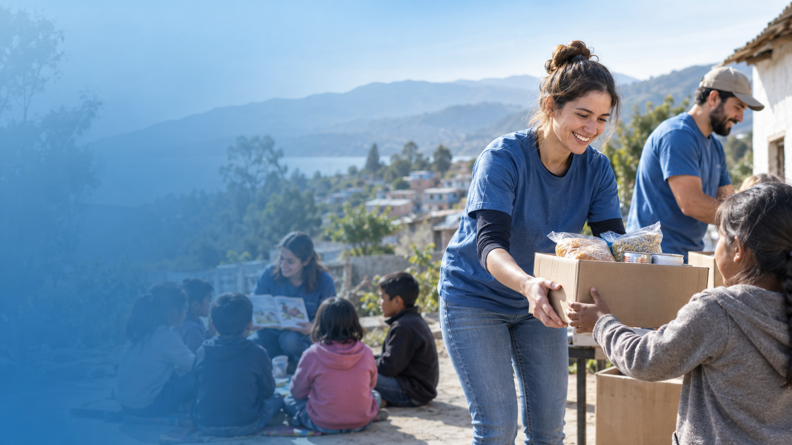

Campanha de arrecadação de alimentos
A campanha arrecada alimentos não perecíveis para famílias em situação de vulnerabilidade social.

A ONG Projeto Social desenvolve ações voltadas para inclusão, educação, solidariedade e apoio às comunidades. Nossos projetos buscam aproximar voluntários e pessoas que desejam contribuir para transformar vidas.
As doações ajudam a manter nossos projetos e permitem ampliar o atendimento às pessoas e famílias beneficiadas pelas ações da ONG.
É possível contribuir com alimentos, roupas, materiais escolares ou doações financeiras.
Quero contribuirPessoas interessadas podem participar das ações da ONG como voluntárias em campanhas, eventos, atividades educativas e projetos de apoio à comunidade.
Para participar, basta realizar o cadastro e informar seu interesse em colaborar.
Quero ser voluntárioA campanha arrecada alimentos não perecíveis para famílias em situação de vulnerabilidade social.
A ação busca arrecadar cadernos, lápis, mochilas e outros materiais para crianças e adolescentes.
Também realizamos atividades educativas e ações de integração que fortalecem os vínculos entre voluntários e comunidade.